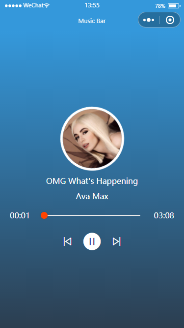
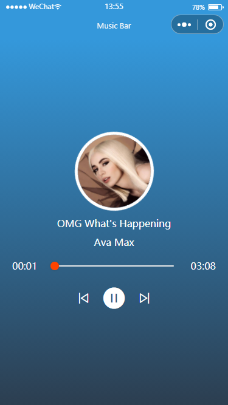

创建项目或页面，修改基本配置信息
页面结构设计 - 参考效果图，这里略
定义页面全局变量和参考函数，包括：音乐播放器 BGM、时间处理函数 timeFormat 和格式化函数 to2Digit；可以在Page外面声明；也可以在Page内部声明
const BGM = wx.getBackgroundAudioManager();
const timeFormat = (num) => {
let min = parseInt(num / 60);
let sec = parseInt(num) % 60
return `${to2Digit(min)}:${to2Digit(sec)}`
};
const to2Digit = (num) => {
return num > 9 ? num : '0' + num;
};
页面响应式数据定义
data: {
lists: [],
ind: 0,
cur: 0,
dur: 0,
per: 0,
isPause: true.
baseUrl: 'https://glpla.github.io/utils'
}
加载页面时，导入音频素材列表并初始化播放器；使用弹窗UI给出提示
onLoad() {
wx.showLoading({
title: 'loading',
})
wx.request({
url: this.data.baseUrl + '/data/song_list.json',
success: res => {
this.setData({
lists: res.data.cont
})
this.init(this.data.ind)
}
})
}
为按钮绑定播放事件、暂停事件：通过背景音频API实现
playBgm() {
BGM.play()
},
pauseBgm() {
BGM.pause()
}
初始化播放器函数：为音频实例BGM指定title、src、singer等基本参数；并添加侦听函数；注意 拼接地址！！！
init(ind) {
BGM.title = this.data.lists[ind].title
BGM.singer = this.data.lists[ind].singer
BGM.src = this.data.baseUrl + this.data.lists[ind].src
BGM.onCanplay(() => {
console.log('music is ready')
this.setData({
isPause: false
})
wx.hideLoading()
})
BGM.onPlay(() => {
console.log('play', BGM.duration);
this.setData({
isPause: false
})
})
BGM.onPause(() => {
console.log('pause');
this.setData({
isPause: true
})
})
BGM.onEnded(() => {
console.log('ended');
this.setData({
isPause: true,
cur:'00:00',
dur:'00:00'
})
})
BGM.onError(() => {
console.log('error');
})
BGM.onTimeUpdate(() => {
console.log('time updating');
this.setData({
cur: BGM.currentTime
per: parseInt(BGM.currentTime / BGM.duration * 100)
})
})
}
上一首、下一首：通过播放列表索引 ind 增加或减少实现；每次更新，自动播放init()
prevSong() {
let ind = this.data.ind
if (ind > 0) {
ind--
}
this.setData({
ind
})
this.init(ind)
},
nextSong() {
let ind = this.data.ind
if (ind < this.data.lists.length - 1) {
ind++
}
this.setData({
ind
})
this.init(ind)
}
进度调节：利用滑块组件 slider 实现；拖动后，相应的调整BGM的播放进度；将百分比转换为对应的秒数
sliderChange(e) {
let per = parseInt(e.detail.value * BGM.duration / 100)
BGM.seek(per)
}
封面图片特效：略
其它设计：略


 
